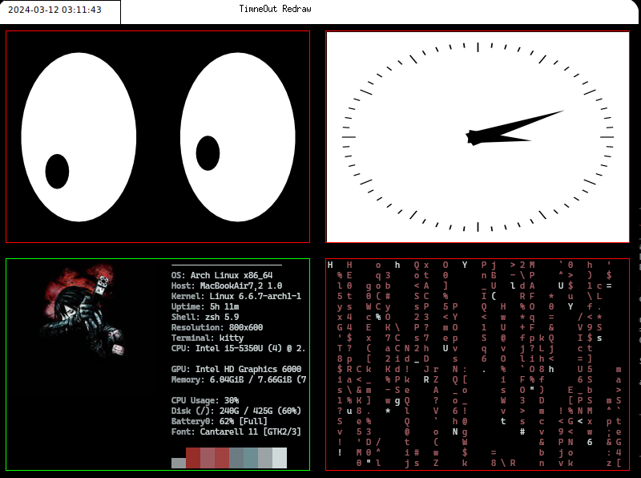

|  |
|  |
|
|---------------------------------------------------------------------—|-----------------------------—|
YggdrasilWM
Version 0.1.1 
What is YggdrasilWM?
- YggdrasilWM is a lightweight, automatic tiling window manager for the X11 system, drawing inspiration from established projects like qtile and xmonad. Our goal is to combine efficiency and configurability, offering users a seamless experience that maximizes productivity while keeping resource usage minimal.
- Developed in C++11, YggdrasilWM emphasizes minimalism not just in its design but also in its dependency requirements, ensuring a clean and straightforward setup process.
- Originally conceived as a personal project to deepen my understanding of window management systems, YggdrasilWM has evolved with the aim of becoming a practical choice for users looking for an alternative window manager that balances flexibility with simplicity.
Roadmap
Our vision for YggdrasilWM's future is clear and focused on enhancing its functionality and user experience:
- EWMH Support: Achieve full compliance with Extended Window Manager Hints (EWMH) to ensure broad compatibility and integration with a variety of applications.
- Layout and Widget Diversity: Expand the range of available tiling layouts and widgets, allowing for a more personalized and efficient workspace.
- Multimonitor Support: Implement comprehensive support for multimonitor setups, accommodating users with extensive display configurations.
- Dynamic Configuration: Introduce the ability to reload configurations on-the-fly, making customization and adjustments seamless and immediate.
YggdrasilWM is steadily growing, and while it remains a project born out of a desire to learn and explore, it aspires to cater to a broader audience by providing a stable, efficient, and customizable window management experience.
License
YggdrasilWM is licensed under the GNU General Public License v3. The full GPL license is available in the LICENSE file.
Dependencies


Optional
used for configuration :
used for testing :
used for documentation :
Build
git clone https://github.com/corecaps/YggdrasilWM.git
cd YggdrasilWM
mkdir build
cd build
cmake ..
make
Usage
Usage: YggdrasilWM [options...]
Options:
-h,--help Print this help message and exit
-v,--version Print version information and exit
-d,--display <display> X11 display to connect to
-l,--log <log> Log file
-c,--config <config> Config file
Configuration
Writing the configuration file
You have two option to configure YggdrasilWM :
Apple pkl
Apple pkl (https://pkl-lang.org/) : type check the configuration let you build using loops and conditions this is the default configuration file format. To generate the final configuration file you need to run the pkl script in the root directory.
pkl eval config-template.pkl -f json > config.json
the config-template.pkl is heavily commented and should be easy to understand.
JSON
You can also write the configuration file directly in JSON format. a default configuration file is provided in the root directory.
Configuration file location
The program will look for a file named config.json in this order :
- The file specified with the -c option
- The current directory
- $HOME/.config/yggdrasilwm/config.json
- /etc/yggdrasilwm/config.json
Bars
- Bars are configured using the configuration file.
- Position can be :
- The size of the bars are substracted to the layout space.
- Bars are common to all groups but specific to each screen.
- Bars are constituted of Widgets:
- each widget is compiled into a shared library.
- The shared libraries are loaded at runtime.
- To write a widget you need to inherit the Widget class ( inc/Bars/Widget.hpp ) and implement the virtual methods.
- The defaults widgets are compiled with the CMake when running the default build. Their source are placed in the plugins subdirectory. if you want to add a widget you need to build them manually or add them to the CMakeLists.txt file.
- If your widget needs Data from the Window Manager they need to register the keys they need in the Window Manager. The Window Manager will then send the data to the widget when it is updated.
Testing using Xephyr
YggdrasilWM is not yet ready to be used as a daily driver, but you can test it using Xephyr. Xephyr is a nested X server that runs inside your current X server. It is used to test window managers and other X11 programs.
- Do not forget to press Ctrl+Shift in Xephyr Window to test Mouse and Keyboard bindings
Using provided start.sh
The script will start Xephyr, YggdrasilWM and some other programs for testing. The logs are stored in the logs directory, the Xephyr window is 800x600 and starts on display :1
- to change the launched programs edit the xinitrc file in the root directory.
- to edit the Xephyr window size and other options edit the start.sh file in the root directory.
Manually
Xephyr -ac -br -noreset -screen 800x600 :1 &
./build/Yggdrasilwm -d :1 -l logs/yggdrasilwm.log --log-level 0
As there is no .xinitrc file, you will have to start a terminal manually using
@code
DISPLAY=:1 ; xterm &
Documentation
The documentation is generated using Doxygen. Run
in the root directory to generate the documentation in the doc/ subdirectory. Feel free to edit the doxygen.cfg file to your needs.